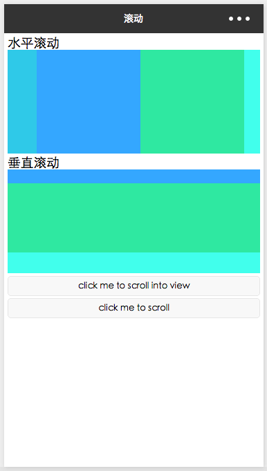

微信小程序使用 scroll-view 实现滚动区域，有水平滚动和垂直滚动，scroll-view 的结构如下:
1 2 3 4 5 <scroll-view > <view > </view > ... <view > </view > </scroll-view >
设置 WXSS 的时候，需要注意使用 font-size: 0 和 white-space: nowrap。

1 2 3 4 5 6 7 8 9 10 11 12 13 14 15 16 17 18 19 20 21 22 23 24 25 26 27 28 <view style ="padding: 10rpx;" > <view class ="section" > <view class ="section__title" > 水平滚动</view > <scroll-view id ="horizontal-scroll-view" scroll-x ="true" > <view class ="scroll-view-item bc_green" > </view > <view class ="scroll-view-item bc_red" > </view > <view class ="scroll-view-item bc_yellow" > </view > <view class ="scroll-view-item bc_blue" > </view > </scroll-view > </view > <view class ="section" > <view class ="section__title" > 垂直滚动</view > <scroll-view id ="vertical-scroll-view" scroll-y ="true" bindscrolltoupper ="upper" bindscrolltolower ="lower" bindscroll ="scroll" scroll-into-view ="{{toView}}" scroll-top ="{{scrollTop}}" > <view id ="green" class ="scroll-view-item bc_green" > </view > <view id ="red" class ="scroll-view-item bc_red" > </view > <view id ="yellow" class ="scroll-view-item bc_yellow" > </view > <view id ="blue" class ="scroll-view-item bc_blue" > </view > </scroll-view > </view > <view class ="btn-area" > <button size ="mini" bindtap ="tap" > click me to scroll into view</button > <button size ="mini" bindtap ="tapMove" > click me to scroll</button > </view > </view >
1 2 3 4 5 6 7 8 9 10 11 12 13 14 15 16 17 18 19 20 21 22 23 24 25 26 27 28 29 30 31 32 33 34 35 36 37 38 39 40 41 42 43 44 45 46 47 48 49 <!-- 文件名: scroll.wxss --> /* 水平滚动 */ #horizontal-scroll-view { height: 150px ; white-space : nowrap; } #horizontal-scroll-view .scroll-view-item { width : 300 rpx; height : 100% ; display : inline-block; } #vertical-scroll-view { height : 150px ; font-size : 0 ; } #vertical-scroll-view .scroll-view-item { width : 100% ; height : 200 rpx; display : inline-block; } .section { margin-bottom : 8 rpx; } button { width : 100% ; } .bc_red { background-color : #34A7FF ; } .bc_green { background-color : #2FC9E8 ; } .bc_blue { background-color : #41FFEC ; } .bc_yellow { background-color : #2FE8A1 ; }
水平 scroll-view 需要使用 white-space: nowrap 防止 view 换行。font-size: 0 去掉 view 之间的空格占据的空间，并且需要给 scroll-view 设置一个固定的高度，否则看不到滚动效果。
1 2 3 4 5 6 7 8 9 10 11 12 13 14 15 16 17 18 19 20 21 22 23 24 25 26 27 28 29 30 31 32 33 var order = ['red' , 'yellow' , 'blue' , 'green' , 'red' ]Page({ data : { toView : 'red' , scrollTop : 100 }, upper : function (e ) console .log(e) }, lower : function (e ) console .log(e) }, scroll : function (e ) console .log(e) }, tap : function (e ) for (var i = 0 ; i < order.length; ++i) { if (order[i] === this .data.toView) { this .setData({ toView : order[i + 1 ] }) break } } }, tapMove : function (e ) this .setData({ scrollTop : this .data.scrollTop + 10 }) } })